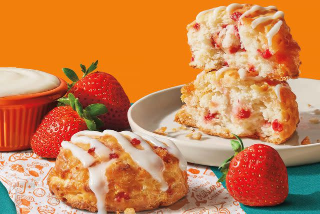

Strawberry Biscuits

Description
These sweet strawberry biscuits make a great on-the-go breakfast or a nice ending to dinner. Make them a bit sweeter and drizzle with the optional glaze.
Ingredients
- 1 2/3 cups flour
- 1/4 cup sugar
- 1 tablespoon baking powder
- 1/4 teaspoon salt
- 3/4 cup butter, frozen
- 1 cup diced fresh strawberries
- 2/3 cup buttermilk
- 1 teaspoon vanilla extract
- 1 tablespoon heavy cream
- 2 tablespoons sugar
- 1/2 cup confectioner's sugar
- 1 tablespoon milk
Steps
- Preheat the oven to 425 degrees F (220 degrees C). Line a baking sheet with parchment paper.
- Combine flour, the 1/4 cup sugar, baking powder, and salt in a large bowl. Grate frozen butter into dry ingredients. Gently mix. Add strawberries and mix until strawberries are coated with the flour mixture.
- Combine buttermilk and vanilla. Pour into strawberry mixture and stir until barely combined. Do not overmix or biscuits will be tough.
- Use an ice cream scoop to scoop biscuits onto the prepared baking sheet. Brush top of biscuits with heavy cream and sprinkle with the 2 tablespoons sugar.
- Bake in the preheated oven until bottoms are browned, 15 to 17 minutes. Let sit for 5 minutes. Remove biscuits and cool completely on a wire rack.
- Whisk powdered sugar and milk together in a cup. Drizzle over biscuits.